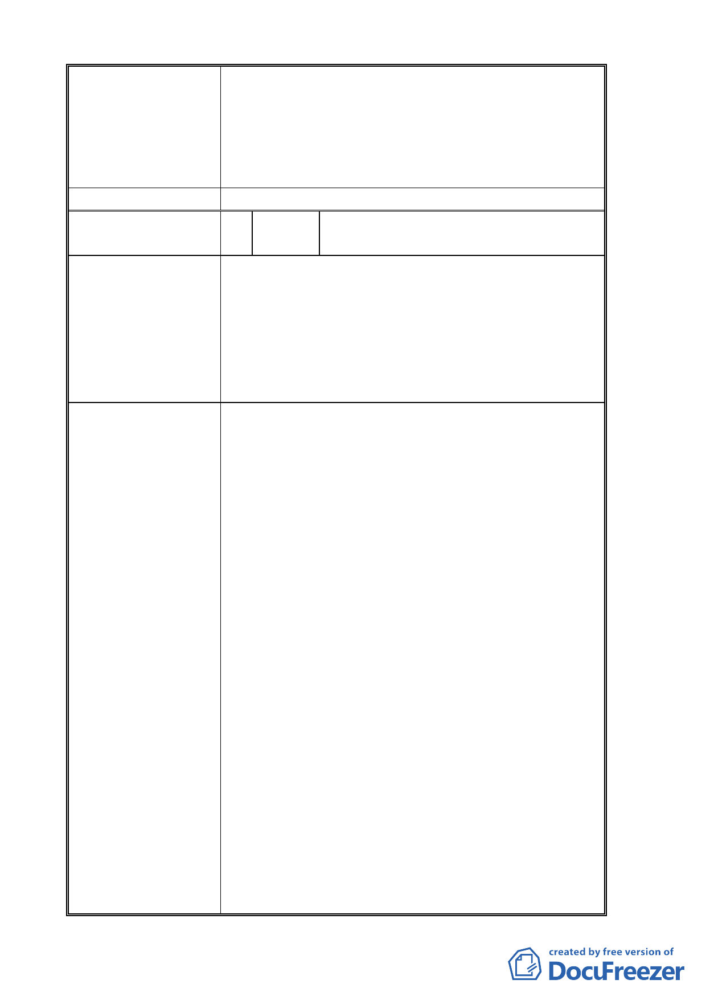

南環段政治大學設站（三角地）附近地區尚無規劃設
置捷運變電站之需求。…」。台灣電力公司以 99 年
8 月 16 日北南電收字第 09908000511 號函表示：「…
經本處評估該都市計畫變更案及政大車站進駐後之
周邊用電成長情形後，檢討供電無困難」。故本案後
續開發並無造成地區電力不足之疑慮。
委員會決議 同編號 1。
編 號 5 陳情人 三角地自救會會長曾萬萍、廖德威、
馬登平等聯署人共 51 人
陳情理由
一、 我 們 不 贊 成 本 地 區 過 度 開 發 與 指 南 山 莊 為 大 專 用
地。
二、本們堅決反對指南路二段 119 巷至 167 號所謂的「三
角地」中的私有地改變現狀。
三、我們贊成指南山莊變更為社區中小學合併生態公園
或者古蹟生態公園。
建議辦法
政治大學要計劃、創造所謂的「大學誠」及將「指
南山莊用地」變更為大專用地，而造成附近的不安和恐
懼，且使附近居民、土地財產和自然生態造成重大的傷
害。
一、本地區（道南橋以東）不宜過度開發和過多的大型
建築物。因為本地區是嚴重的「地震斷層區」以
及地下有如蜘蛛網的煤坑(永和煤坑、朝日礦坑、
芳川煤礦等)於其下。在日據時代本地區是禁建
的，故當時道南橋東邊除政治大學有一、二層外，
其餘為平房。政大教職員宿舍及指南山莊內都是
平房，老百姓的住屋更不必說了。二期重劃區及
政大一、二、三街的建立是一重大錯誤；這四十
年來（居民都親眼看見）在山坡中不知不覺的改
道，土石流也常常發生。現在建築物由於地下水
涵養過多、大雨後電梯底部都積水及未建地或多
或少都有土石流。這無非是一顆不定時炸彈，像
貓空土石流就是一個例子。
二、「指南山莊」幾十年來一直是我們居民的精神堡壘，
莊內的衛兵隊更是我們心裡的安全褓母。「指南山
莊」有生態資源不宜開發以免生態破壞，且其位
於地震帶。如果國防部不需要土地，首先就應該
歸還土地於原地主。其次原地主不要的話，就應
該依社區居民的需求規劃，這裡需要一所中小學。
三、政治大學實際上是不需要指南山莊之土地的，這是
- 10 -